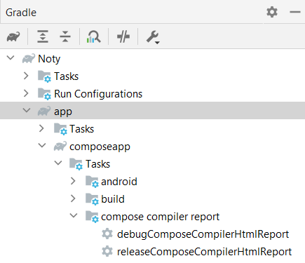

Gradle Plugin¶
Using the Gradle Plugin, you can fully automate the process of generating the report without any overhead.
This Gradle plugin takes care of generating raw compose metrics and report from the Compose compiler and then
generates the beautified report from them.
✅ Apply the plugin¶
Apply the plugin to the module in which compose is enabled.
Info
Check the latest plugin release:

Using the plugins DSL:¶
Using legacy plugin application:¶
Add this to top project level build.gradle
buildscript {
repositories {
maven {
url "https://plugins.gradle.org/m2/"
}
}
dependencies {
classpath "dev.shreyaspatil.compose-compiler-report-generator:gradle-plugin:1.0.0-beta02"
}
}
Apply in the module level project:
💫 Sync the project¶
Once plugin is applied, sync the project. After the project is synced, tasks for generating compose report will be generated for the variants and flavors used in the project.
Example

🪄 Generate report¶
Run the Gradle task (or directly run the task from tasks pane available on the right side of IDE)
If report is generated successfully, the path to report will be logged in the console
Example (Console output)
⚙️ Configure parameters for plugin (Optional)¶
If you have to configure plugin parameters manually (which is completely optional), it can be configured as follows:
htmlComposeCompilerReport {
// Enables metrics generation from the compose compiler
enableMetrics = true/false // Default: `true`
// Enables report generation from the compose compiler
enableReport = true/false // Default: `true`
// Sets the name for a report
name = "Report Name" // Default: Module name
// Output path where report will be generated
outputPath = project.buildDir.absolutePath + "/custom_path" // Default: module/buildDir/compose_report
}
htmlComposeCompilerReport {
// Enables metrics generation from the compose compiler
enableMetrics.set(true/false) // Default: `true`
// Enables report generation from the compose compiler
enableReport.set(true/false) // Default: `true`
// Sets the name for a report
name.set("Report Name") // Default: Module name
// Output path where report will be generated
outputPath.set(project.buildDir.resolve("custom_path").absolutePath) // Default: module/buildDir/compose_report
}